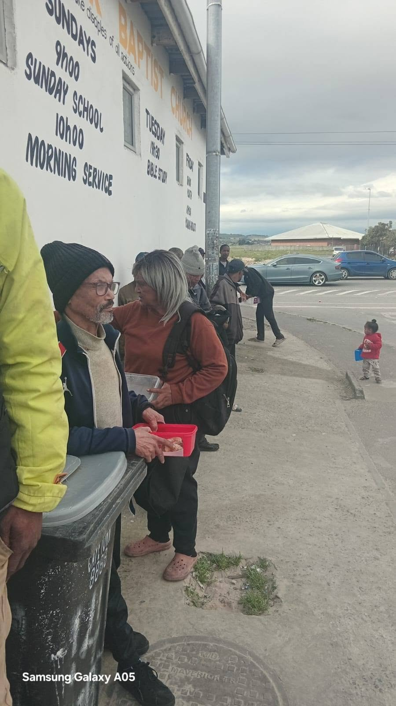
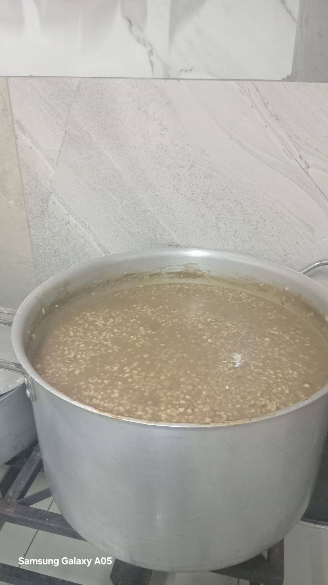
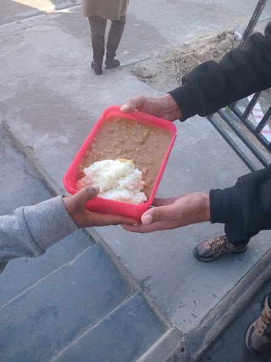
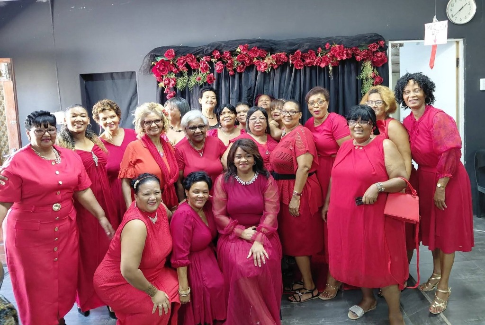
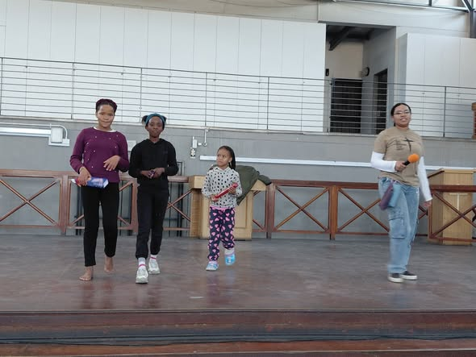

A Christ-Centred Community
of Faith, Hope & Love
We are a vibrant, family-oriented church dedicated to spreading the Gospel of Jesus Christ, making disciples of all nations, and actively caring for the Wesbank community through practical outreach and compassionate feeding schemes.
Weekly Gatherings & Services
Whether you're visiting for the first time or seeking a spiritual home, you will find warm fellowship, Bible-grounded preaching, and inspiring praise.
Morning Celebration & Word
10:00 AM – 12:00 PMInspiring praise and worship, communion, Biblical sermon exposition by Pastor Jonathan Pretorius, and congregational prayer.
Kingdom Kids Sunday School
09:00 AM – 10:00 AMDynamic Bible lessons, singing, memory verses, and creative activities for toddlers, children, and pre-teens.
Bible Study & Prayer
19:30 PM – 20:30 PMDeep dive verse-by-verse into the Scriptures, group discussions, and focused intercessory prayer for families and Wesbank.
Wesbank Baptist Youth
19:00 PM – 20:30 PMHigh-energy youth worship, life skill mentoring, candid discussions, games, and fellowship for high schoolers and young adults.
Welcome from Pastor Jonathan & First Lady Jacqueline Pretorius
"Wesbank Baptist Church is a home where broken hearts find healing, families grow in faith, and the unconditional love of Jesus is demonstrated in deed and in truth."
Located at 141 Diepwater Street, Wesbank, Kuilsriver, Wesbank Baptist Church (Wesbank Baptist Fellowship) is committed to proclaiming the transforming message of the Cross. Guided by Christ's Great Commission in Matthew 28:19, our mission reaches far beyond Sunday mornings. We are on the ground weekly feeding vulnerable families, investing in our youth, building strong Christian marriages, and interceding for peace and restoration across our neighborhood.
Board of Deacons & Church Leadership
Appointed by God and affirmed by the congregation to shepherd, support pastoral ministry, and serve Wesbank Baptist Church with humility, prayer, and godly wisdom.
"Therefore, choose from among you men and women full of the Spirit and of wisdom, whom we may appoint to this duty... holding the mystery of the faith with a clear conscience."
Our deacons and ministry leaders are the backbone of practical ministry at Wesbank Baptist Church. Working in harmony with Pastor Jonathan and First Lady Jacqueline Pretorius, they oversee pastoral care, benevolence distribution, youth and children's ministries, and facility stewardship.
Spiritual Care & Pastoral Support
Standing alongside pastoral leadership to visit sick members, encourage families, and foster spiritual vitality across all generations.
Congregational Care & Benevolence
Ensuring that no family or child in our community is left without basic sustenance, clothes, or emotional and prayer support in times of need.
Outreach & Food Relief Stewardship
Leading weekly logistics, food donations, cooking, and safe distribution for the Wesbank Feeding Scheme serving hundreds every week.
Dedicated Prayer & Governance
Holding up the church in continual intercession, stewarding tithes and offerings with integrity, and keeping God's house clean and welcoming.
The Heart of Wesbank: Feeding Scheme & Outreach
As documented across our community and social outreach, Wesbank Baptist actively reaches out with the gospel and feeds the needy.
Feeding Hungry Tummies, Nourishing Souls
In tough economic seasons, no family or child in our neighborhood should go to bed hungry. Every week, our dedicated volunteers prepare large pots of warm, wholesome stew, soup, and fresh bread for local children and pensioners in Wesbank.



A Ministry For Every Season of Life
Find your place to belong, serve, and flourish in God's kingdom.
Wesbank Baptist Youth
Empowering the young people of Wesbank with strong Biblical foundations, acoustic worship, mentorship, sports, and a safe refuge away from street pressures.
Praise, Worship & Choir
Leading our congregation into God's presence each Sunday through heartfelt gospel hymns, choral harmonies, and contemporary African praise.

Women's Ministry • House of DeborahHouse of Deborah
A vibrant sisterhood hosting annual Women's Easter Conferences, monthly prayer breakfasts, and supporting mothers and young women across the Wesbank community.
House of David
House of David
Uniting fathers, brothers, and husbands to lead godly homes, provide practical church stewardship, and stand together as pillars of faith in Wesbank.
Children's Sunday School
Nurturing faith from infancy through elementary school with dynamic lessons, outdoor prayer circles, Scripture badges, and Christmas & Easter presentations.
Golden Agers
Golden Agers & Home Care
Loving pastoral care, communion for homebound seniors, prayer visits, and social tea mornings celebrating the pillars of our congregation.
Moments of Faith, Fellowship & Outreach
Explore real moments from our Sunday worship gatherings, community feeding scheme, youth mentorship, and church family in Wesbank.

Community Prayer Wall
"Do not be anxious about anything, but in every situation, by prayer and petition, with thanksgiving, present your requests to God." — Philippians 4:6
Submit a Prayer Request
Share your prayer need with our pastoral team and church community. God hears and answers!
Recent Prayer Requests
Click "I Prayed" to stand in agreementTithes, Offerings & Outreach Support
Your faithful giving helps sustain our church ministry, power our weekly community feeding scheme, support youth activities, and reach souls across Wesbank with the Gospel of Jesus Christ.
Electronic Funds Transfer (EFT)
Direct Bank Deposit
• Tithes:
SURNAME - TITHE• Feeding Scheme:
SURNAME - FEEDING• General Offering:
SURNAME - OFFERING
Visit Us In Wesbank, Kuilsriver
We are conveniently situated in Wesbank, easily accessible via Stellenbosch Arterial and Hindle Road.
Physical Address
141 Diepwater Street, Wesbank, Kuilsriver, Cape Town, 7580, South Africa
Telephone & Pastor Direct
Church Office: +27 (0)21 909 6316
Mobile / Pastoral Inquiries: +27 (0)84 522 9046
Email: pretorias@telkomsa.net
Send Us a Message
Have questions about membership, dedication, or outreach?